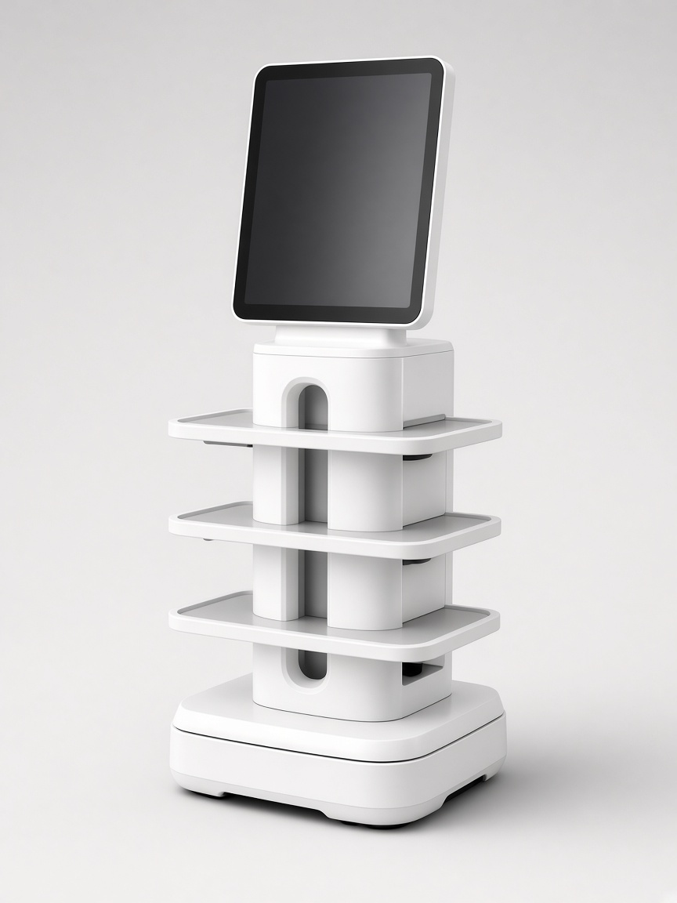

 Live demo & mapping video on floor visit
Live demo & mapping video on floor visit
Keenon Robotics · High-load restaurant delivery
Keenon’s high-load dinerbot — 40 kg across adjustable layers and up to ~18 h battery. Widely listed by Australian Keenon dealers including Automiq and Robots Australia.
Approx. A$15,913 – A$16,093
AU listing: ~A$15,913–A$16,093 (Robots Australia). Confirm GST & warranty terms.
| Manufacturer | Keenon Robotics |
|---|---|
| Dimensions (W×D×H) | 50.0 × 52.7 × 126.6 cm |
| Weight | 63 kg |
| Total load | 40 kg |
| Speed | 0.1 – 1.0 m/s |
| Min. passage | 70 cm |
| Battery | Up to ~18 h · charge ~4 h |
| Best for | Large dining rooms, canteens, high-volume service |
| AU market sources | Robots Australia, Automiq Robotics, Keenon product pages |